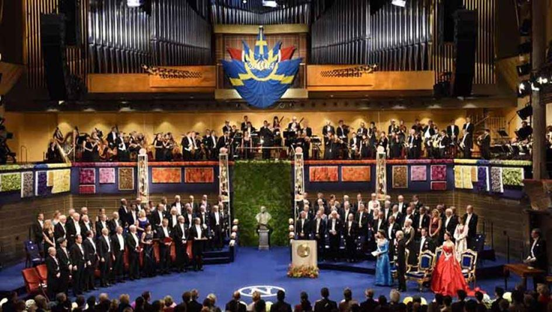

Il y a cinq ans, j'ai publié à Paris un court article pour lequel je me suis fait largement fustigé par la « droite » molle – comme à l'accoutumée. Il s'agissait de remarques sur une graphomane politiquement correcte biélorusse, une certaine Alexievitch, qui a obtenu le prix Nobel de littérature en 2015, selon moi sur une consigne reçue de l'immonde Soros. Dans les quelques paragraphes dudit texte, je mettais à l'épingle les déclarations globalistes de la scribouillarde, démontrant qu'elle était récompensée non pour la finesse de son style, mais pour son adhésion aux dogmes de l'ordre nouveau métisseur et raciste anti-Blancs.
Parfaitement informé des courants internes sous-jacents aux mondes universitaires français et européens, j'avais commencé à trouver cela suspect dès que j'avais appris les noms des traducteurs français de la Biélorusse qui s'exprime en russe : des sbires sans-frontièristes rémunérés par des salaires universitaires repèrent des taupes prêtes à toutes les bassesses, les placent comme l’on prend des positions dans des actions à la Bourse, puis attendent que le moment propice arrive, et là ils font valoir leurs titres. C’est ainsi que les ordures professorales slavistes à la solde de milliardaires cosmopolites et la république métissolâtre ont agi avec l’« écrivain Alexievitch » fabriquée ex nihilo.
Comme d'habitude, il suffit d'attendre quelques années pour se rendre compte que mes hypothèses, même iconoclastes, tapent dans le mille. Voici que notre prix Nobel de littérature a reçu, cet été, un prix directement de Soros 1 , puis se lance, tête baissée, dans le putsch anti-présidentiel en Biélorussie 2.
Je n'ai qu'à reproduire ici mon article paru à Paris il y a cinq ans et qui se révèle être une prophétie par excellence :
« Prix Nobel de littérature : promotion d’une stalinienne vendue à Soros »
Depuis des décennies déjà, le prix littéraire le plus prestigieux du monde a cessé de récompenser une parcelle de cette beauté stylistique qui sauvera le monde comme l’a supposé Dostoïevski et n’est là que pour marquer les tendances idéologiques du gouvernement planétaire en cours d’installation accélérée. Le lauréat du prix Nobel n’est plus un artiste de la plume – je suis sûr que l’Académie suédoise ne lit même plus les œuvres de ceux qu’elle promeut –, mais ne constitue qu’une idole, totalement interchangeable comme le veut la marchandisation de l’humain, dressée sur un piédestal en plastique jusqu’à l’année suivante.
Le 8 octobre 2015, à Stockholm, était rendu public le nom de la lauréate, Svetlana Aleksievitch, dont les produits auraient stupéfait Alfred Nobel. En effet, durant l’ère soviétique, cette bonne apparatchik de ce système qui a engendré le Goulag était une fonctionnaire docile, lauréat du Prix du Komsomol (1986), décorée d’ordres créés par Staline. C’est à ce moment-là qu’elle a publié, obéissant à la commande sociale, son unique bouquin connu rédigé dans la langue banale exigée par l’Union des écrivains soviétiques dont elle était membre. L’URSS a implosé et sa gamelle idéologique s’est vidée. Tous les plumeux ex-Soviétiques qui ne se respectaient pas se mirent à la recherche d’autres maîtres. Le prix Nobel de littérature de 2015 a eu beaucoup de chance, ayant réussi à se vendre à la Fondation Soros. Ses parutions sont devenues de plus en plus triviales, indignes du qualificatif de « littéraire » : le mondialisme est là pour fabriquer une idiocratie sans frontières, des Alexievitchs en étant les instituteurs. Pour cette raison, un lecteur de Nabokov ou même de Tchékhov ne peut supporter ces publications indigestes, cependant financées par toute sorte de Soros, grands ou petits. C’est également pour cela qu’un lecteur de langue russe, idiome dans lequel s’exprime cette citoyenne biélorusse, ne connait absolument pas le nom de cette baudruche gonflée en Occident.
Bien sûr, le salaire obtenu par l’heureuse ex-Soviétique exige une totale adhésion aux thèses de ses chefs, thèses qu’elle est censée répéter sans cesse. Pire encore pour la littérature : ce psittacisme médiatique du politiquement correct est son unique « œuvre » ! Le Poutine actuel avec son allié naturel (malgré de minuscules différences) Loukachenko sont des résistants à abattre. Or, nous trouvons dans les médias occidentaux ou chez leurs confrères russes stipendiés par de célèbres officines la doxa habitant les discours de la nouvelle nobélisée : « Poutine est l’envahisseur de l’Ukraine et de la Crimée », sa Russie étant comparée à la Corée du Nord (que cette dame ne connaît bien sûr pas). Durant l’un de ses séjours payés par Soros en Italie, cette génie des lettres s’est même jointe aux généreux élans d’Italiens visant à soutenir l’installation d’Africains dans les Apennins ! Et naturellement, chaque mouvement de résistance d’Européens est comparé par cette bonne élève au NSDAP hitlérien : née dans un univers poststalinien, cette graphomane maîtrise tous les instincts des despotes actuels et sait les flatter.
Ce qui est insupportable naturellement, c’est que par cette nouvelle décision de l’Académie suédoise, Big Brother dresse de futures vagues humaines incapables de générer de nouveaux Rembrandt, Claudel ou Mozart.
Dr. A.L.
NOTES ET RÉFÉRENCES
1, Journalist Svetlana Alexievich Awarded 2020 Open Society Prize -https://www.ceu.edu/article/2020-06-27/journalist-svetlana-alexievich-awarded-2020-open-society-prize
2, Belarus protests: Nobel laureate Svetlana Alexievich set to be quizzed over opposition council - https://www.euronews.com/2020/08/24/belarus-protests-nobel-laureate-svetlana-alexievich-set-to-be-quizzed-over-opposition-coun
3. Article du 9 octobre 2015, https://ripostelaique.com/prix-nobel-de-litterature-promotion-dune-stalinienne-vendue-a-soros.html
Partager cette page